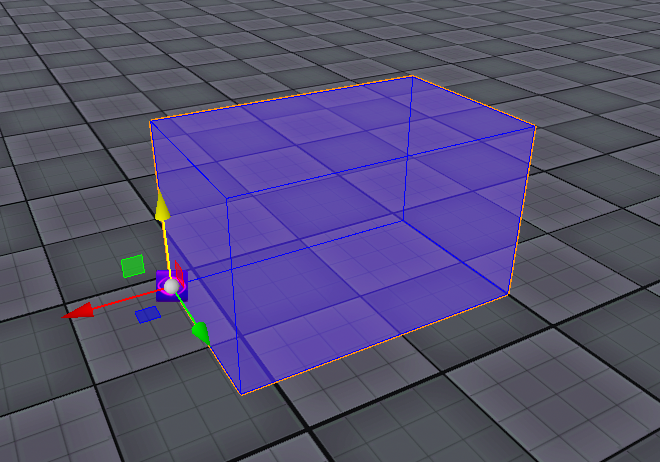
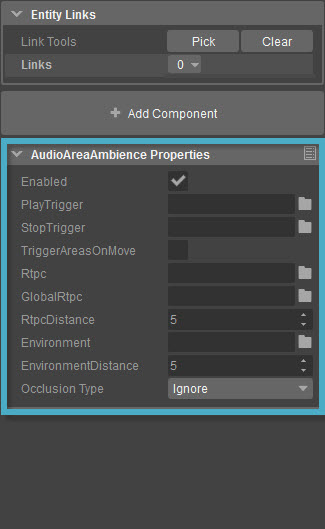

- Создайте Box как объект AreaSolid.

- Теперь поместите объект «AudioAreaAmbience» из группы «Аудио» на вкладке «Создать объект» и поместите объект окружающего звука рядом с объектом AreaSolid.
- Выберите объект окружающего звука. Затем свойства AudioAreaAmbience можно отобразить на правой панели, как показано на рисунке ниже. Теперь заполните свойства PlayTrigger и RtpcDistance.

- Выберите объект AreaSolid на уровне, а затем под Свойства щелчок по вкладке Выбрать кнопка в Целевые инструменты поле Площадь раздел. Теперь выберите объект Audio Area Ambiance, который был помещен рядом с AreaSolid, чтобы прикрепить объект окружающего звука к объекту Solid в качестве цели.
- Попробуйте изменить объект AreaSolid с помощью инструмента Designer, как описано выше. Если пользователи хотят визуализировать звук и увидеть, как он работает, они могут ввести s_DrawAudioDebug = abcdefvw в консоли. При приближении к открытому пространству в Объекте AreaSolid пользователи смогут увидеть красный шар следующим образом.
- Каждый раз, когда объект AreaSolid модифицируется с помощью объекта Designer, полигоны, состоящие из сплошной области, будут перенесены на сторону Engine, и пользователи смогут убедиться, что взаимодействие между звуковым объектом и объектом AreaSolid является результатом модификации.